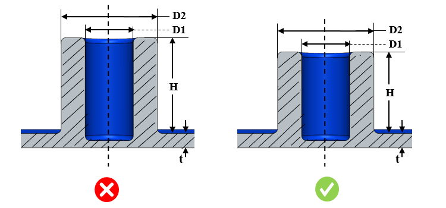

ボスの外径と内径の比、高さと外径の比、高さと公称肉厚の比など、ボスに関連するパラメータは、指定された値に従って設定する必要があります。
ボスの理想的な高さを維持するうえで重要なのは、適切なドラフトを付与して高いボスを設計した場合でも、根元には厚肉部が生じるという点を理解することです。これは冷却に影響を与え、ボイドやヒケの原因となります。高いボスは深い中空穴を生じさせ、長いコアピンを必要とします。また、コアピンの冷却や穴の寸法精度にも影響を与える可能性があります。
外径と内径の比率については、荷重がかかった際にも十分な強度を確保できるようにすることが不可欠です。そのため、弱いボスを避けるために、外径と内径の比は規格に従って設定する必要があります。
DFMProはボス形状を識別し、高さと外径の比、高さと公称肉厚の比をチェックしたうえで、設定された値と照合して検証します。同様に、DFMProはボスの外径および内径を算出し、その比率を設定値と比較して検証します。
ユーザーは、デフォルトで設定されている比率を編集することができます。
ルールUIでは、材料の一覧は Map Material から読み込まれ、ユーザーは材料およびその値を構成できます。
材料とその値を構成した後、ユーザーは Ctrl+M コマンドを使用して、ルールUI内でマテリアルグループおよびグレード別に構成済み材料の一覧をフィルタ表示できます。同じキー（Ctrl+M）を使用してフィルタをリセットできます。

ここでは、
D1 = 内径
D2 = 外径
H = ボス高さ
t = 公称肉厚